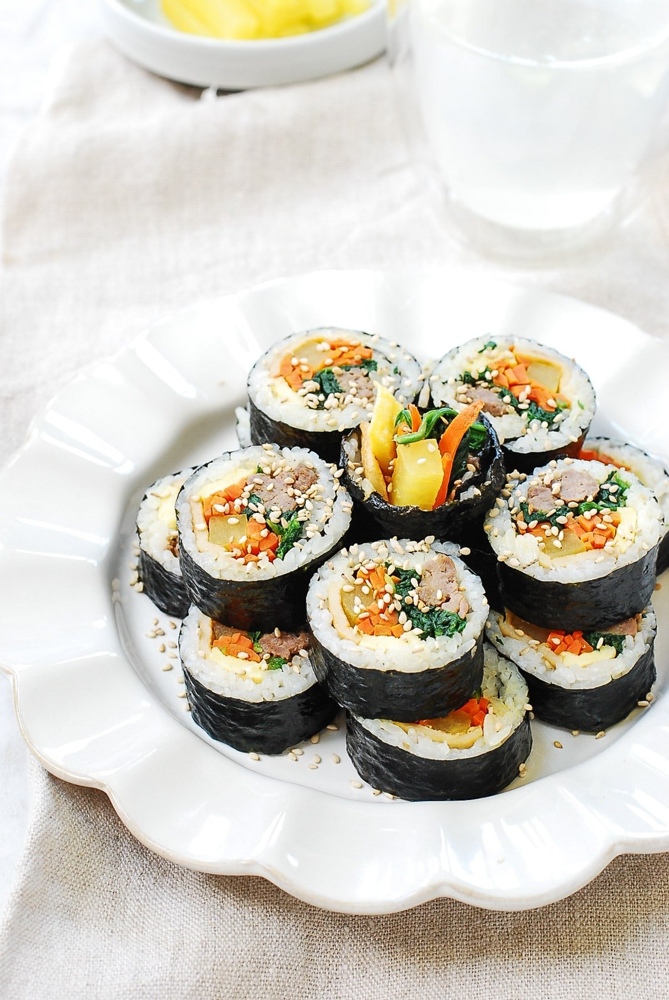

Ingredients
- Nori Seaweed
- Can Spam
- Carrot
- Radish pickles
- Eggs
- Fishcakes
- Imitation crab meat
- Sesame Oil and seeds
- Salt
- Vinegar
- Cooked white rice
Description
This tradional main dish is considered by many a "cherish recipe". It is an all-time favorite Korean meal-on-the-go. The unique flavors that gives off a smooth nutty flavor is filling and pleasing to the eye.
Recipe credits:
Steps
- Cook the white rice as per instruction. After cooking the rice, add couple pinches of salt, sesame seeds, and dizzle 2 tbsp of sesame oil over the freshly cooked rice.
- Mix the seasoning well in the rice, making sure to not squish the rice. The goals is to aerate the rice as you mix so it cools down.
- Beat a few eggs in a bowl and transfer them to a skiller over medium heat. Do this step in batches to prevent overcrowding the eggs. Fry equally thin sheets of eggs.
- Cooked the shredded carrots in a skillet with a little oil and some salt.
- Slice the fishcakes thinly and stir-fry over medium high heat until cooked.
- Spread about 1 cup of rice evenly over the Nori Seaweed.
- Add the filling ingredents, sliced Spam, sliced Radish pickle, Imitation Crab, eggs, fishcakes, and carrots, over the rice in the middle.
- Roll tightly and cut into even sizes